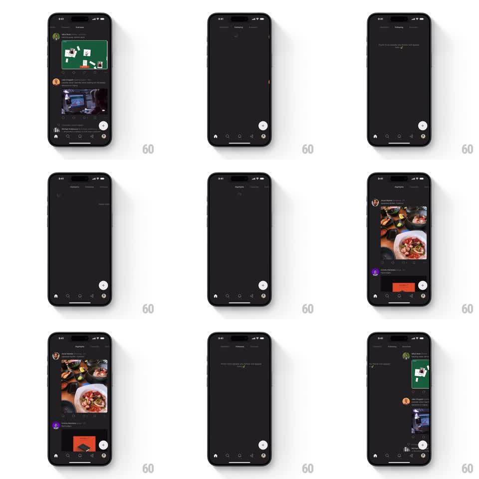

Media
Frame-by-frame

Rebuild this interaction 1:1: Posts' swipe tabs - horizontal swiping pages between feed tabs (Following, Favorites, Everyone) with spring physics while the tab indicator tracks the drag and centers the active tab.

Rebuild this interaction 1:1: Posts' swipe tabs - horizontal swiping pages between feed tabs (Following, Favorites, Everyone) with spring physics while the tab indicator tracks the drag and centers the active tab.
## Integration
Integration: stack-agnostic spec - springs given as stiffness/damping, timed motions as duration + curve; map every value to your framework and animation library of choice.
## Scene
Dark social feed. Top: a compact tab bar ("Following", "Favorites", "Everyone"). Body: vertically scrolling post feeds (avatar, text, media) or an empty state ("Posts from people you follow will appear here"). A round FAB sits bottom-right above the tab bar.
## Motion spec
Pattern: gesture-coupled horizontal paging with tracking indicator.
- Horizontal drag anywhere on the feed pages between tabs 1:1 - the outgoing feed slides out as the incoming feed slides in, no gap.
- The tab indicator (underline or pill) moves in exact proportion to the drag, interpolating between tab positions continuously - not jumping after settle.
- Tab label emphasis interpolates too: the active label brightens as the drag approaches its tab, the other dims.
- Release past ~40% (or with flick velocity): the page commits with a spring (stiffness ~380, damping ~30); otherwise it springs back.
- Vertical scroll position is preserved per tab when paging away and back.
- Tapping a tab triggers the same horizontal slide (300ms, ease-out) rather than an instant swap.
## Calibration
- The indicator must never desync from the content offset - it is a live readout of the drag, not a state badge.
- Springs settle fast (under 400ms); feed paging should feel snappy, not floaty.
## Reduced motion
Tabs crossfade content; indicator moves without physics.
## Don't miss
- The FAB and bottom tab bar stay fixed during the swipe - only the feed region pages.
- Empty states page exactly like populated feeds; same physics, same indicator behavior.